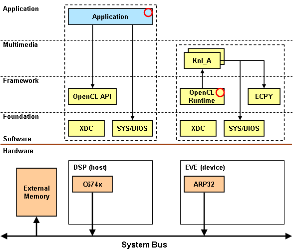
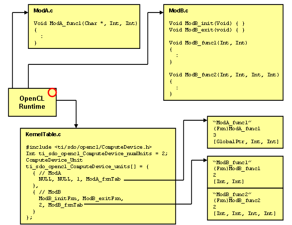
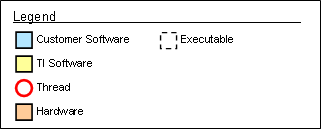

| package ti.sdo.opencl |
|
OpenCL API Implementation
- DETAILS
- OPENCL PROGRAMMING MODEL
- OPENCL API EXAMPLE CODE
- OPENCL KERNEL EXAMPLE CODE
- OPENCL RUNTIME REGISTRATION
- AVAILABLE FUNCTIONS
- LEGEND
- SEE ALSO
OpenCL is a programming framework for heterogeneous compute resources
developed by the Khronos group. It allows a host processor to execute
code on multiple device processors.
[ more ... ]
| XDCspec declarations | sourced in ti/sdo/opencl/package.xdc |
package ti.sdo.opencl [1, 0, 0] {
module ComputeDevice;
// Global configuration settings for the this package
module OpenCL;
}
DETAILS
OpenCL is a programming framework for heterogeneous compute resources
developed by the Khronos group. It allows a host processor to execute
code on multiple device processors.
This implementation of the OpenCL specification supports only the
task-parallel model. Please note, this implementation is still under
development.
The following diagram illustrates an OpenCL application architecture.

The application, running on the host processor, makes OpenCL API
calls to execute kernel functions on the device processor. In this
example, the application is running on the C674x processor and the
kernel functions are executed on the ARP32 processor. The application
provides the thread (red circle) which calls the OpenCL APIs. The
OpenCL Runtime provides the thread on the device processor which is
used to execute the kernel functions. There may be multiple device
processors in a system but only one host processor.
The application and the kernel functions have access to the framework
components. For example, they can make calls into the XDC and SYS/BIOS
components. The kernel functions also have access to the ECPY component.
OPENCL PROGRAMMING MODEL
The application must create the following objects to setup an OpenCL
execution environment: a context object, a command queue, and a program
object. This is done with the following functions.
- clGetPlatformIDs
- clGetDeviceIDs
- clCreateContext
- clCreateCommandQueue
- clCreateProgramWithBinary
Once these objects have been created, the application creates a kernel
object for each kernel function it wants to execute on the compute
device. The kernel object is used to set the function argument values.
The command queue is used to schedule a kernel function for execution.
- clCreateKernel
- clSetKernelArg
- clEnqueueTask
After a kernel function has been scheduled with a call to clEnqueueTask,
the kernel object can be reused with new argument values to schedule
the kernel function again.
To release the resources used by OpenCL, the application must call the
following functions before terminating.
- clReleaseKernel
- clReleaseProgram
- clReleaseCommandQueue
- clReleaseContext
OPENCL API EXAMPLE CODE
The following psudeo code gives an example of what an OpenCL program
would look like. See the
Hello Example for a working program.
#include <CL/opencl.h>
cl_context context;
cl_command_queue cmdQue;
cl_program program;
cl_kernel helloKnl;
Ptr bufBase;
// -------- OpenCL Initialization --------
// get the default platform
clGetPlatformIDs(.., platformAry, ..);
// get an accelerator device
clGetDeviceIDs(platformAry, .., deviceAry, ..);
// create a context for the accelerator device
context = clCreateContext(.., deviceAry, ..);
// create a command-queue for the accelerator device
cmdQue = clCreateCommandQueue(context, deviceAry, ..);
// create program object
program = clCreateProgramWithBinary(context, .., deviceAry, ..);
// -------- Application Execute Phase --------
// create a handle to the OpenCL kernel (function)
helloKnl = clCreateKernel(program, "HelloKnl", ..);
// allocate buffer using host allocated memory
bufBase = Memory_alloc(heap, 64, ..);
// assign the kernel arguments
clSetKernelArg(helloKnl, 0, sizeof(Ptr), &bufBase);
// invoke the hello world kernel
clEnqueueTask(cmdQue, helloKnl, ..);
// read the buffer contents
System_printf("%s\n", (Char *)bufBase);
Memory_free(heap, bufBase, bufSize);
// -------- OpenCL Finalization --------
clReleaseKernel(helloKnl);
clReleaseProgram(program);
clReleaseCommandQueue(cmdQue);
clReleaseContext(context);
OPENCL KERNEL EXAMPLE CODE
The following psudeo code gives an example of what an OpenCL kernel
function looks like. For the most part, it looks just like an ordinary
function. However, a kernel function must have a return type of void,
cannot use recursion, and does not support pointers to functions.
Additional restrictions are specified in the OpenCL Spec in Section 6.8.
#include <string.h>
void HelloKnl(char *buffer)
{
strncpy(buffer, "Hello World");
}
OPENCL RUNTIME REGISTRATION
All kernel functions must be registered with the OpenCL Runtime. This
is done using static initialization. The OpenCL Runtime references the
following two symbols.
Int ti_sdo_opencl_ComputeDevices_numUnits ComputeDevice_Unit ti_sdo_opencl_ComputeDevices_units[]
When building an executable, you must provide a source file which declares
and statically initializes these two symbols. The following figure
gives an example.

In the figure above, there are two units, ModA.c and ModB.c. The ModA
unit defines one kernel function. The second unit, ModB, defines an
init and exit function and two kernel functions. In the file KernelTable.c,
an array of units is declared and initialized with the contents of
ModA and ModB.
Here is the source code of KernelTable.c
#include <xdc/std.h>
#include <ti/sdo/opencl/ComputeDevice.h>
UInt ModA_func1_args[] = {
ti_cl_arg_type_GlobalPtr,
ti_cl_arg_type_Int,
ti_cl_arg_type_Int
};
ComputeDevice_FxnDesc ModA_fxnTab[] = {
{
"ModA_func1", // fxn name
(Fxn)ModA_func1, // fxn address
3, // num args
ModA_func1_args // arg types
}
};
UInt ModB_func1_args[] = {
ti_cl_arg_type_Int,
ti_cl_arg_type_Int
};
UInt ModB_func2_args[] = {
ti_cl_arg_type_Int,
ti_cl_arg_type_Int,
ti_cl_arg_type_Int,
ti_cl_arg_type_Int
};
ComputeDevice_FxnDesc ModB_fxnTab[] = {
{
"ModB_func1", // fxn name
(Fxn)ModB_func1, // fxn address
2, // num args
ModB_func1_args // arg types
},
{
"ModB_func2", // fxn name
(Fxn)ModB_func2, // fxn address
4, // num args
ModB_func2_args // arg types
}
};
Int ti_sdo_opencl_ComputeDevice_numUnits = 2;
ComputeDevice_Unit ti_sdo_opencl_ComputeDevice_units[] = {
{ // ModA
NULL,
NULL,
1,
ModA_fxnTab
},
{ // ModB
ModB_initFxn,
ModB_exitFxn,
2,
ModB_fxnTab
}
};
AVAILABLE FUNCTIONS
The following list of OpenCL APIs are functional in this port. Please
note, this is work in progress and not all features may be currently
implemented.
OpenCL Platform Layer
- clGetPlatformIDs
- clGetPlatformInfo
- clGetDeviceIDs
- clGetDeviceInfo
- clCreateContext
- clCreateContextFromType
- clRetainContext
- clReleaseContext
- clGetContextInfo
OpenCL Execution Layer
- clCreateCommandQueue
- clRetainCommandQueue
- clReleaseCommandQueue
- clGetCommandQueueInfo
- clSetCommandQueueProperty
- clCreateProgramWithBinary
- clRetainProgram
- clReleaseProgram
- clGetProgramInfo
- clCreateKernel
- clSetKernelArg
- clRetainKernel
- clReleaseKernel
LEGEND
This legend applies to all figures.

SEE ALSO
generated on Fri, 24 Feb 2012 03:46:07 GMT